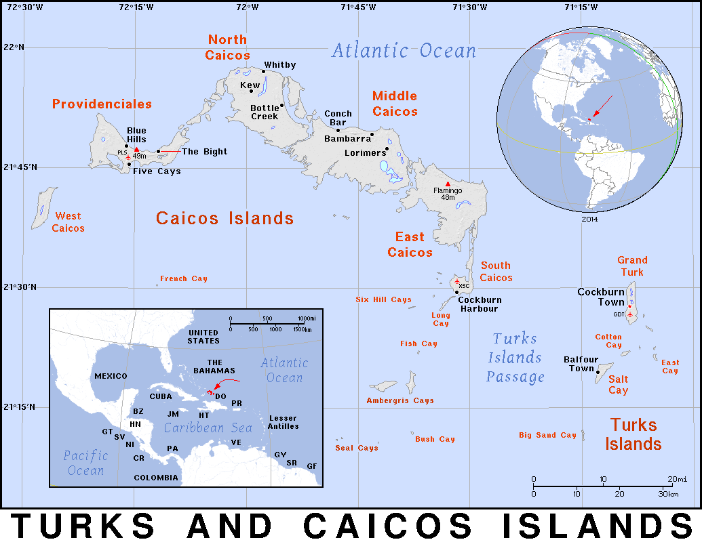

On the Subject Of
Anton Ryjov
A human, supposedly
To Kokomo, of course!
Turks and Caicos Islands

- British Overseas Territory
- A series of 40 small Carribean islands
- SE of the Bahamas
Russia
- The Motherland
- Can't go there for a while cause that'll put me in the military
- NNS of the Bahamas, going right over the pole
Japan
- A bunch of islands that are perhaps best known as the birthplace on anime and similar arts
- I'm not into anime but it's also a country of unique culture and beauty
- NW of the Bahamas